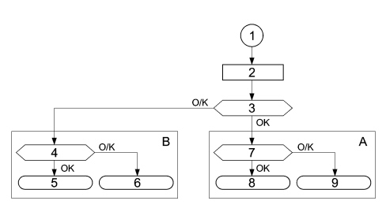
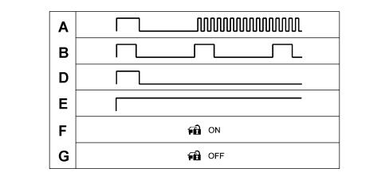
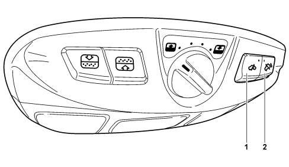
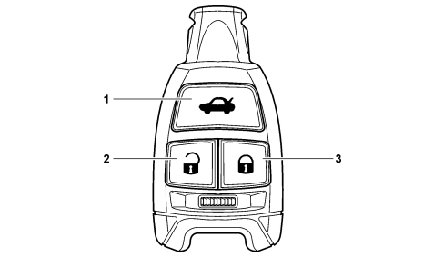
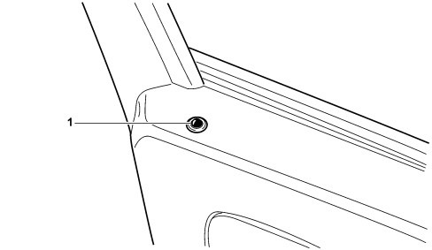

5580E ANTI-THEFT DEVICE
- Path
- Descriptions > 55 ELECTRICAL EQUIPMENT > 5580 SPECIAL ACCESSORIES > 5580E ANTI-THEFT DEVICE
- Kind
- system description
- Applies to
- all engines; all production periods
- Interactive page
- https://sloeber94.github.io/elrnDB-fCrm/en/#/194000193
Applies to: all engines; all production periods
FIAT CODE SYSTEM
The vehicles are equipped with an electronic system known as the FIAT CODE to produce the engine immobilizer function.
The FIAT CODE system only allows the engine to be started by means of the NCM after a secret code, memorized previously in the NCM, is received.
The second generation Code system is incorporated in the Body Computer Node (NBC). The FIAT CODE consists of 5 essential elements (in addition to the Body Computer which act as a control unit):
- CAN line for dialogue between the NBC and the NCM
- two-way serial line for recovery (W line);
- two TEG devices (electronic key) containing a transponder with a secret code;
- an (NTR) aerial that reads the code contained in the TEGs;
- the NCM.
Operation
The FIAT CODE allows the start of the engine management by the NCM by means of a coded dialogue between the NBC and NCM during the stage that precedes start up.
After key on - i.e. TEG correctly inserted in the TEG Reader and turned to the ON position - the NCM sends a code request to the NBC, which responds only after it has identified (via its aerial) the presence of a known TEG.
If the secret code in the answer is valid, the NCM continues with the regular engine management activities, allowing the engine to be started up.
The NCM can only memorize the secret code by means of a particular self-programming procedure described later on.
Operation of the FIAT CODE is guaranteed if any of the other NBC functions are not working properly.
After recognizing an enabled transponder, the FIAT CODE switches off any alarm system.
Interaction between the fiat code and the electronic key (teg)
Every TEG contains a transponder with an IDENTIFICATION CODE and a SECRET CODE.
As soon as the TEG is inserted, the transponder is energized and sends the identification code to the NTR which, having recognized it as one of the enabled ones, continues with the cryptographic transponder recognition strategy.
If the identification code is not recognized, the procedure is aborted and the engine cannot be started.
The cryptographic transponder is recognized by means of a challenge-response algorithm with an encrypted code exchange.
The code recognition time is less than 160 ms per attempt.
The NTR attempts the transponder acquisition for up to 1 second.
Communication between the engine control node and the fiat code
The dialogue between the NBC and the NCM is activated on the C-CAN in normal operating conditions. Every exchange of information between the NBC and the NCM is guided by the NCM (the NBC never interrogates the NCM but only responds after a request).
After KEY-ON, the flow of code exchange operations between the NBC and the NCM depends on the status (blank or memorised) of the engine control unit.
If the NCM is blank, the procedure involves sending a fix-code request to the NBC: in this way the NCM learns the secret code and stores it in its memory. This procedure is known as CODE RECORDING (the TEG must always be present in the TEG Reader).
If the NCM is not memorized, the procedure involves a double exchange of secret codes between the NCM and the NBC.

1 - Key-On
2 - NCM initialisation
3 - The NCM is memorized
4 - Memorisation successfully completed?
5 - ENABLE ENGINE MANAGEMENT = the software flow continues with engine management
6 - PROHIBIT ENGINE MANAGEMENT = To enable a new procedure (request code = ENQ) it is necessary to remove and resupply the +15 (KEY-OFF and KEY-ON)
7 - Is the secret code valid?
8 - SEE POINT 6
9 - SEE POINT 5
A - CODE VERIFY
B - CODE RECORDING
Code recording
The CODE RECORDING procedure is the memorizing of the fix code in the engine control unit.
Only after the NBC has memorized the identification codes, the secret code and the fix code, is the NBC ready to satisfy the request to transmit a code to a pristine NCM.
After power on, the engine control unit initialises its software and requests a fix code if it is blank.
If the NBC is not blank, it responds by sending the fix code, but only after having recognized an authorized TEG. If the TEG is not authorized (key unrecognized) or there is no TEG inserted, the NBC does not respond.
If the FIAT CODE is blank and there is not a transponder in the TEG Reader, a FIX code request is sentf from the NCM to the NBC and the latter does not respond.
Code verify
This standard procedure is repeated throughout the vehicle lifetime whenever the user inserts the TEG in the Reader and turns it to the ON position (KEY ON): this procedure enables the starting of the engine if the TEG is enabled.
The code verify procedure continues even when the user places the TEG in the START position (CRANKING).
When the TEG is inserted in the reader (NTR), the NBC recognizes whether the TEG transponder is one of the ones enabled (up to 8 TEGs available). If it is recognized, the steering is released and the TEG is enabled to rotate to the ON and START positions for engine starting.
At the same time as the KEY ON, the NCM sends a starting authorization request to the NBC.
In response to this request, the NBC only sends a response, encrypted by the Minikrypt, to the engine control unit if the transponder is recognized as enabled.
If the NBC receives further verification requests, it only needs to re-read the transponder in the aerial before responding to the NCM if visible signs of tampering are present (see later).
If the result of the transponder recognition is negative (incorrect transponder, no readable transponder, etc.), the NBC will send the code (incorrect transponder or missing transponder) to the engine management control unit and the vehicle protection system failure warning light in the instrument panel will come on.
If the FIAT CODE is blank and the NCM sends a FIX code request, the FIAT CODE, after having recognized a transponder, will respond by refusing starting authorization.
Method of using c-can or recovery line w
Communication between the NBC and NCM takes place along the C-CAN line by default: if the C-CAN line is faulty, the recovery strategy is as follows:
- the NCM changes to recovery status on the W serial line and requests the code from the NBC: if the outcome is positive, start-up is permitted;
- in the event of problems on the W line, the NCM transfers to recovery status by means of the Diagnostic instrument at the end of the retransmission attempts.
The recovery strategy is mainly managed by the NCM, which acts as a master unit during communication: the NBC, acting as the slave unit, must always be ready to respond to code requests from the C-CAN network and also from the W serial line.
Communication via the c-can network
Communication via the Body Computer and the NCM takes place via the following two CAN messages:
- IMMO CODE REQUEST (immo code request)
- IMMO CODE RESPONSE (immo code response).
The IMMO CODE REQUEST is sent by the NCM and received by the NBC.
The IMMO CODE RESPONSE is sent by the NBC and received by the NCM.
Communication via the w line
If the system changes to recovery mode due to a malfunction in the CAN network, information must be exchanged between the NCM and NBC via the W serial line.
This code exchange is only carried out for the CODE VERIFY procedure: it is not therefore possible to run a CODE RECORDING procedure via the W line.
Information must be exchanged via the serial line in exactly the same way as via the C-CAN network: The NCM control unit is the communication master unit while the NBC control unit responds to requests received by the NCM.
Both messages - IMMO CODE REQUEST and IMMO CODE RESPONSE - are carried on the serial line.
CHECKING THE W LINE ELECTRICAL CONNECTION
Because communication only takes place on the W line in recovery mode, an ERROR status would not not be recognised until the system was used i.e. because the customer would not be able to move the vehicle.
A strategy for checking the W serial line has therefore been added so that the line can be diagnosed.
About 1 second after the key on a code is sent on the W line to the NBC.
If the NBC does not repeat it correctly, the fault will be signalled at the instrument panel for the activation of the passenger compartment protection system failure warning light (CODE) which will flash three times.
Protection codes
The FIAT CODE function is performed via the exchange of secret codes between system subunits (TEG, NTR, NBC, engine management control unit).
- UNIVERSAL CODE: this is the code that an unprogrammed NBC sends to the NCM when it detects the presence of a transponder in the TEG. The vehicle protection warning light comes on at a frequency of 1.6 Hz and duty cycle of 50%. The warning light flashes to indicate that the system is properly connected but the vehicle is not protected by a code.
- IMMO CODE: This is the basic code that provides the secret code and the fix code. An automatically generated immo code is allocated to each vehicle. The IMMO CODE is used to generate all the other secret codes used by the FIAT CODE function.
- SECRET CODE: This code is resident in the transponder. It is stored in the transponders contained in the TEG when the transponders are programmed and in the NBC when the keys are programmed at the end of line.
- FIX CODE: This is stored in the NBC during end of line programming.
- ELECTRONIC CODE (PIN): This is obtained from the fix code and printed on the CODE CARD, which is given to the vehicle owner. It takes the form of a 5-figure decimal code (0 is not permitted). It is used to access the NBC memory in protected mode in order to reprogram or program new remote control units (TEGs) and/or perform specific diagnostic functions.
- IDENTIFIER: This is resident in the transponder and different for each transponder. It is stored in the FIAT CODE during the programming procedure. The NBC manages a table of enabled identifiers and another table of disabled identifiers.
Fiat code function in the nbc/ntr
The FIAT CODE is a function of the NBC/NTR.
The main FIAT CODE functions are:
- to place the alarm in a deactivated state after recognizing an enabled TEG (NBC);
- to energize the aerial to read the TEG transponder (NTR);
- to send the random code to the transponder (NTR);
- to receive the encrypted code transmitted by the TEG (NTR);
- to store the secret code (NBC/NTR);
- to manage a list of up to a maximum of 8 enabled identification codes (NTR);
- to manage a list of 4 permanently disabled identifiers (NTR);
- to manage the C-CAN line towards the engine control unit (NBC);
- to control activation of the warning light on the panel via communication with the NQS (NBC);
- to carry out autodiagnosis (NBC/NTR).
Aerial
The aerial is located in the TEG Reader from where it is also managed.
Since the aerial needs to be as close as possible to the transponder (on account of electro-magnetic immunity, the limited range of the transponder and small dimensions) it is fastened to the front part of the TEG-Reader.
Transponder (in the teg)
A cryptographic transponder is located inside the TEG.
Operation
At the time of the +15, the transponder is energised by the aerial and responds by emitting a rolling, encrypted secret code.
If the code is recognized as valid, the NBC sends the engine control unit, on request, a coded signal allowing the engine to be started.
Up to 8 electronic keys (TEGs) can be stored in the NBC.
Specifications
The transponder in the TEG has the information required for a coded dialogue with the TEG Reader encoded in its memory.
The identification code differs from transponder to transponder to guarantee that no two transponders have the same identification code even if there is a request for a duplicate in the Network.
Programming the teg
The memorisation procedure is divided into two stages in sequence:
- the transponder in the TEG is stored in the NTR;
- The NBC manages memorisation of the fix code in the engine control unit.
This second stage is implemented automatically when the first is completed successfully after key on.
The transponders are sent to the TEG manufacturer programmed with the identifier (different for each transponder).
The manufacturer generates an immo code, computes the relevant codes (secret code, fix code) and programmes the secret code and the programming date in the transponders.
Once programmed, it prints a bar code on a disposable label that contains the immo code, the TEG identifiers, the programming date, the emergency key mechanical code (door opening).
The secret code contained in the TEGs is used the encrypted algorhithm for recognition of the TEG.
Programming a new body computer
If the Body Computer is replaced, the NBC must be programmed with the secret code and fix code of the vehicle on which it will be installed.
The database is accessed using the chassis number to obtain the vehicle immo code. This is used to supply the secret code and fix code, which are programmed in the NBC.
Once the NBC has been installed in the vehicle, the TEG identifiers are stored (see reprogramming).
An NBC programming operation can only be performed with a blank NBC by the FIAT parts dept.
Reprogramming the teg
TEG reprogramming involves storing the TEGs enabled upon vehicle start-up in the NTR.
New TEGs to be programmed and TEGs already programmed will be entered in the NTR so that they can be recognised by the TEG Reader, which stores those presented during the procedure in the enabled identifier table and transfers those not presented from the table to the disabled identifier table.
Disabled teg table
If an enabled TEG is no longer available (lost, stolen or no longer operational), its operation must be disabled during the subsequent programming procedure (necessary to memorise a new replacement TEG for example).
The TEG Reader manages a table in the EEPROM that can contain data on 4 disabled TEGs: the identifiers of enabled TEGs not presented during the reprogramming procedure are transferred to this table.
If the disabled TEG table is full, any new TEG will replace the first entered in the table.
This table also allows the traceability of TEGs used on the vehicle.
Reprogramming procedure
The minimum time required for KEY-ON during the memorisation procedure is 1 second.
The TEG reprogramming procedure is performed/guided by the Diagnostic/Inspection Instrument: this procedure is activated by means of access protected by the vehicle PIN.
Once the procedure is activated, the flow is as follows:
- the Diagnostic instrument commands the NTR to initialise the TEG learning procedure;
- the operator inserts the first TEG and asks the TEG Reader to learn it: the NTR reads the transponder following key-on, checks whether the secret code is correct and, if so, leans the TEG identifier;
- the operator repeats the second operation for all the TEGs.
Once all the TEGs have been learnt, the Diagnostic instrument commands the NTR to store them permanently in its EEPROM via the following procedure:
- the NTR compares the learnt identifiers with those currently in its memory.
- data on TEGs stored in the EEPROM but not presented during learning are moved to the disabled TEG table.
- data on learnt TEGs are stored in the enabled TEG table only if they are not already present in the disabled TEG table.
- it is possible to program up to 8 enabled TEGs.
Deleting a lost teg from the memory
The procedure is similar to that described in the previous paragraph. All the TEGs owned must be presented. Those not presented will be deleted, i.e. transferred to the disabled identifier table. At any time it is possible to delete a lost TEG from the memory using the Diagnostic/Inspection Instrument. The identifier of this TEG is transferred to the disabled identifier table and will no longer be recognised.
Code card
This card shows:
- The emergency code (electronic code) that allows the Service Network to program electronic keys (TEGs) and remote controls using an EXAMINER.
- The emergency key mechanical code identifies the mechanical profile of the key and must be specified on the order to receive the key already cut.
1 - Electronic code
2 - Mechanical code
OPERATION
The electronic emergency code is also used for system diagnosis and for other operations using Examiner or other diagnostic instruments. Many of these operations (e.g. TEG Memorisation) can be carried out only once this code has been entered.
Before any operation, it is therefore necessary to ask the Customer for their Code Card.
The Code Card must not be left in the vehicle in case it is stolen.
Code warning light (vehicle protection)
The Code warning light (vehicle protection) is located in the instrument panel and is controlled by a message from the NBC on the B-CAN.
OPERATION
With the engine running, the diagnostic warning lights (CODE and EOBD) must never be on. Special strategies are therefore implemented to prevent spurious code warning light activations if the +15 signal is cut off from the NBC for less than 1 s.
CODE warning light flashing modes and times
The NBC controls activation of the FIAT CODE warning light via the CAN as shown in the following table. The times should be considered with a tolerance of 10%.
According to the flashing mode (from A to D) identified in the list below, the code warning light should flash as shown in the following table.

A - Warning light flashing valid for condition 1
B - Warning light flashing valid for conditions 2, 3, 4, 5, 6, 7, 8
C - Warning light flashing valid for conditions 9, 13
D - Warning light flashing valid for conditions 10, 11, 12, 14, 15, 16
E - Warning light on constantly, condition 17
F - Warning light off, condition 18
- 1 - NBC blank, NCM blank, C-CAN line and W line connected, transponder recognised, start-up allowed
-2 - NBC blank, NCM blank, C-CAN line and W line connected, transponder not recognised, start-up not allowed
-3 - NBC blank, NCM blank, C-CAN line not connected and W line not connected, transponder recognised, start-up not allowed
-4 - NBC blank, NCM blank, C-CAN line not connected and W line not connected, transponder not recognised, start-up not allowed
-5 - NBC blank, NCM memorised, C-CAN line connected and W line connected, transponder recognised, start-up not allowed
-6 - NBC blank, NCM memorised, C-CAN line connected and W line connected, transponder not recognised, start-up not allowed
-7 - NBC blank, NCM memorised, C-CAN line not connected and W line not connected, transponder recognised, start-up not allowed
-8 - NBC blank, NCM memorised, C-CAN line not connected and W line not connected, transponder not recognised, start-up not allowed
-9 - NBC memorised, NCM blank, C-CAN line connected and W line connected, transponder recognised, start-up allowed
-10 - NBC memorised, NCM blank, C-CAN line connected and W line connected, transponder not recognised, start-up not allowed
-11 - NBC memorised, NCM blank, C-CAN line not connected and W line not connected, transponder recognised, start-up not allowed
-12 - NBC memorised, NCM blank, C-CAN line not connected and W line not connected, transponder not recognised, start-up not allowed
-13 - NBC memorised, NCM memorised, C-CAN line connected and W line connected, transponder recognised, start-up allowed
-14 - NBC memorised, NCM memorised, C-CAN line connected and W line connected, transponder not recognised, start-up not allowed
-15 - NBC memorised, NCM memorised, C-CAN line not connected and W line not connected, transponder recognised, start-up not allowed
-16 - NBC memorised, NCM memorised, C-CAN line not connected and W line not connected, transponder not recognised, start-up not allowed
- 17 - reception, by the NBC in VERIFY mode, of a delayed code following a code request made 500 ms after key on that gave rise to activation of the code warning light with a fixed light must give rise to immediate deactivation to show that the system is properly connected and operational and the vehicle is protected.
- 18 - No particular bulb flashing modes are required when the NBC is in Diagnostic status.
Fault diagnosis
The allows self-diagnosis to be carried out for system components.
The NTR is capable of identifying and memorizing the presence of the following malfunctions in its EEPROM:
Transponder:
- defective or missing transponder or secret code incorrect
- deleted/disabled
- unknown/not memorized
Transponder aerial:
- electrical connection defective (circuit open, short circuit to earth or to battery)
Active diagnosis
By means of commands sent from the Diagnostic instrument, it is possible:
To ask whether the NBC type is:
- blank (whenever a TEG is inserted)
- programmed at end of line (whenever a TEG is inserted)
- spare part (whenever a TEG is inserted)
blank/programmed NCM
link with NCM OK / KO
- Request the number of TEGs programmed.
- Read one TEG at once and find out for each TEG:
Valid transponder
- whether the TEG is memorised
- its position in the table
- whether the secret code is valid
the TEG ID
- Request the number and identifier of the last TEG used
- Request a reading of all enabled TEGs
- Request the number of TEGs enabled and the number of TEGs disabled
- Perform manual memorisation of TEGs by means of successive acquisitions and the condition of the transponder must be verified at each acquisition It is also possible detect the presence of a transponder in the aerial and whether it is valid or not.
- Request current system status identified by:
Last TEG used and enabled and recognised
the NBC has received a code request from the engine control unit
the NCM is blank
the FIAT CODE is blank
the NBC is enabled to send the Minikrypt key
the identifier of the last TEG used is present in the enabled TEG table
the identifier of the last TEG used is present in the disabled TEG table
The FIAT CODE has identified a tampering attempt at the +15 supply
- Control activation/deactivation of the CODE warning light at the NQS
Programming the electronic keys / electronic key (teg)
The electronic key is programmed at end of line together with the FIAT CODE.
During the vehicle's lifetime, it is possible to make the Electronic Key Reader (NTR) learn new keys, e.g. if ELECTRONIC KEYS (TEGs) are added or deleted.
Upon each new programming procedure, all the Electronic Keys not presented during the above procedure (for the removal of lost keys) are cleared from the memory.
All available Electronic Keys (TEGs) must be programed upon each programming. Those not presented will be deleted from the memory and it will not be possible to program them.
Procedure for storing an electronic key (teg)
The ELECTRONIC KEY (TEG) storage procedure is managed by the Diagnostic instrument (Examiner) and can be activated only by entering the ELECTRONIC CODE (see CODE CARD).
The procedure consists of learning the ELECTRONIC KEY (TEG) codes and involves secret codes being received by the TEG Reader and then stored. During the procedure, the codes are stored permanently in the TEG Reader EEPROM memory.
Once the procedure is activated, the flow is as follows:
- the Diagnostic instrument commands the Electronic Key Reader (NTR) to initialise the ELECTRONIC KEY (TEG) learning procedure and confirms this to the operator;
- the operator enters the first ELECTRONIC KEY (TEG) to be stored;
- the Electronic Key Reader (NTR) receives the secret code and the ID of the ELECTRONIC KEY (TEG) and learns it;
- the Diagnostic instrument confirms that learning has taken place;
- the previous stages are repeated for each ELECTRONIC KEY (TEG) that must be learned, up to a maximum of 8;
- once the ELECTRONIC KEYS (TEGs) have been learned, the operator asks the Diagnostic instrument to store them:
- the diagnostic equipment commands the Electronic Key Reader (NTR) to store the ELECTRONIC KEYS (TEGs) learnt.
Only the ELECTRONIC KEYS (TEGs) learnt during the procedure will be stored in the EEPROM (therefore all the ELECTRONIC KEYS (TEGs) not presented will not be stored).
Code system component managment
Database for code system parts management
There is a centralized DATA BASE (for all markets) managed by the FIAT PARTS DIVISION for ordering all CODE system components.
The production plant transfers all the necessary data into this data base together at the time of vehicle production.
FIAT PARTS then uses this data base for ordering components that need replacing by the Dealer Network
The data base contains numerous pieces of information, such as:
- vehicle chassis no.;
- secret code;
- code of each ELECTRONIC KEY (TEG);
- emergency key mechanical code;
- programming date.
If one of the CODE system components needs replacing and is being ordered, follow the procedure described below.
Mislaid ELECTRONIC KEY (TEG)
Ask the Customer for all the remaining ELECTRONIC KEYS (TEGs) in their possession.
The Customer must prove that he or she is the owner of the vehicle by producing the registration document and identification data.
The code(s) for the mislaid ELECTRONIC KEYS (TEGs) must be deleted from the Electronic Key Reader memory (NTR); proceed as follows:
1. Connect the Tester to the tester output on the vehicle.
2. Place the Electronic Key Reader (NTR) to PROGRAMMING mode.
3. Insert the ELECTRONIC KEYS (TEGs) still in your possession in the Electronic Key Reader (NTR) in order.
4. End the PROGRAMMING mode; the IDs of any ELECTRONIC KEYS (TEGs) not presented will be cleared from the Electronic Key Reader memory (NTR).
At the end of the procedure, print a table showing the identification code/s still enabled. If no printer is available, copy the codes from the screen onto the FIAT PARTS system form.
Only if the Electronic Key Reader (NTR) already contains 8 ELECTRONIC KEYS (TEGs) send the codes to Fiat Parts to update the DATABASE.
Request for a new ELECTRONIC KEY (TEG)
Use the Personal Computer supplied to log onto Fiat Parts. Enter the chassis no. of the customer's car, the model code and set up a VOR order to request the ELECTRONIC KEY (TEG) (entering the part number) and specify the quantity.
Note that the Electronic Key Reader (NTR) is designed to store up to 8 ELECTRONIC KEYS (TEGs). It is not therefore possible to accept orders when the sum of the number of ELECTRONIC KEYS (TEGs) already available to the customer plus the new ELECTRONIC KEYS (TEGs) ordered exceed this quantity. Keep a record of the form used to order the ELECTRONIC KEY (TEGs) in order to monitor the situation.
Programming the codes for the ELECTRONIC KEYS (TEGs) in the Electronic Key Reader (NTR) memory.
Once the new ELECTRONIC KEYS (TEGs) have been received from Fiat Parts, ensure that all the old ELECTRONIC KEYS (TEGs) in the customer's possession are available.
Connect the Tester to the vehicle tester output and run the following procedure.
1. Connect the Tester to the tester output on the vehicle.
2. Place the Electronic Key Reader (NTR) to PROGRAMMING mode.
3. Insert the ELECTRONIC KEYS (TEGs) still in your possession in the Electronic Key Reader (NTR) in order.
4. End the PROGRAMMING mode; the IDs of any ELECTRONIC KEYS (TEGs) not presented will be cleared from the Electronic Key Reader memory (NTR).
5. Check system operation before returning the vehicle to the customer by starting it up using all the ELECTRONIC KEYS (TEGs) and opening/closing the doors using the remote control unit.
Replacing lock barrels and/or emergency mechanical keys
This becomes necessary when one or more door lock barrels (driver's door lock or others) are forced.
The Customer must prove that he or she is the owner of the vehicle by producing the registration document and identification data.
Use the Personal Computer supplied to log onto Fiat Parts. Enter the chassis no. of the customer's car, the model code and set up a VOR order to order a single electronic key kit complete with dowels (entering the part number) for the vehicle type and specification.
Replacing Electronic Key Reader (NTR)
Ask the Customer for all the remaining ELECTRONIC KEYS (TEGs) in their possession.
They should also prove that they are the owner of the vehicle by producing the registration document and identification data.
Use the Personal Computer supplied to log onto Fiat Parts. Enter the chassis no. of the customer's car, the model code and set up a VOR order to order a single Electronic Key Reader (NTR) (entering the part number to identify the version).
Once the new programmed Electronic Key Reader (NTR) has been received from Fiat Parts, proceed as follows:
1. Check the serial number stamped on the plate applied to the order form corresponds to that shown on the Electronic Key Reader (NTR).
2. Check the vehicle chassis no. printed on the plate applied to the order form corresponds to the vehice chassis no.
3. If all codes correspond, install the Electronic Key Reader (NTR) on the vehicle instead of the malfunctioning unit.
4. Connect the Tester to the tester output on the vehicle.
5. Place the Electronic Key Reader (NTR) to PROGRAMMING mode.
6. Insert the ELECTRONIC KEYS (TEGs) still in your possession in the Electronic Key Reader (NTR) in order.
7. End the PROGRAMMING mode; the IDs of any ELECTRONIC KEYS (TEGs) not presented will be cleared from the Electronic Key Reader memory (NTR).
8. Check system operation before returning the vehicle to the customer by starting it up using all the ELECTRONIC KEYS (TEGs) and opening/closing the doors using the remote control unit.
Replacing the engine management control unit
This is required if the engine malfunctions.
The Customer must prove that he or she is the owner of the vehicle by producing the registration document and identification data.
Use the personal computer provided to log onto Fiat Parts. Enter the part number of the Engine Control Unit to be replaced.
Once the Engine Management Control Unit is received from Fiat Parts, install it on the vehicle and insert the electronic key (TEG) in the Electronic Key reader (NTR) and turn it to the ON position to allow the self-programming.
Turn the electronic key to START with the clutch or brake depressed to start the vehicle and check the engine is operating correctly.
Replacing the Electric Steering Lock (NBS)
This is required if the electric steering lock malfunctions.
The Customer must prove that he or she is the owner of the vehicle by producing the registration document and identification data.
Use the personal computer provided to log onto Fiat Parts. Enter the part number of the Electric Steering Lock to be replaced.
Once the Electric Steering Lock is received from Fiat Parts, install it on the vehicle and insert the electronic key (TEG) in the Electronic Key Reader (NTR) and turn it to the ON position to allow the self-programming.
Extract the Electronic Key (TEG) from the Electronic Key Reader (NTR) after 10 secs. and wait for the steering to lock (which will take place after about 5 secs.). Check that the steering is locked.
Check that the steering is locked.
Replace the Body Computer (NBC)
This is required if the Body Computer malfunctions.
The Customer must prove that he or she is the owner of the vehicle by producing the registration document and identification data.
Use the Personal Computer supplied to log onto Fiat Parts. Enter the chassis no. of the customer's car, the model code and set up a VOR order to order a single Body Computer (entering the part number to identify the version).
Once the Body Computer has been received from Fiat Parts, install it on the vehicle and insert the Electronic Key (TEG) in the Electronic Key Reader (NTR) to allow the alignment of the Secret Codes.
Turn the electronic key to START with the clutch or brake depressed to start the vehicle and check the electris are working properly.
ALARM SYSTEM
Specifications
The vehicle protection system on the CROMA makes it possible to combine excellent protection against break in attempts and suitable comfort for the customer, providing a high specification and trim level, starting with central locking and extending to the computerized vehicle entry/starting system.
The central locking has, fitted as standard, dead locks and protection functions (independent driver's door unlocking, independent boot release, automatic locking of the doors at speed) and comfort features (electronic key window closing) that can be customized by the user through a menu in the instrument panel.
The system can be operated up to 20 m away from the vehicle using the remote control electronic key (TEG) (with 3 buttons and a back up mechanical insert that can be extracted).
The alarm system includes perimeter protection, volumetric protection and anti-lifting protection.
The door has an LED to signal that it is closed.
The system consists of:
ANTI-THEFT ALARM CONTROL UNIT (CSA)
The CSA is an electronic component connected to the A-bus serial line and to the front wiring which manages the acoustic alarm functions.
VOLUMETRIC ALARM CONTROL UNIT (CAV)
The CAV is an electronic component supplied with the front courtesy light, connected to the A-bus serial line and to the rear wiring which incorporates the volumetric and anti-tilt sensors and the exclusion buttons.

1 - Volumetric sensors exclusion button
2 - Anti-tilt sensor exclusion button
REMOTE CONTROL KEY
This is a key with electronic remote control that makes it possible to control the central locking and the vehicle alarm at a distance.
It contains a secret code that identifies it and allows recognition.

1 - Boot release button
2 - Button for unlocking doors / switching off alarm
3 - Button for locking doors / switching on alarm
DETERRENT LED
There is a red LED at the side of the safety knob in the driver's door panel.
With the alarm system switched on, the LEDs in the front door panels flash red (deterrent function).

1 - Deterrent LED
INSTRUMENT PANEL WITH DISPLAY
The display in the instrument panel is used to show the customer warning messages.
Operation
System operation is co-ordinated by the NBC, which sends/receives commands from external modules via the A-Bus serial line.
For further details,
See descriptions 5505 INSTRUMENT/GAUGE ELECTRICAL CIRCUITS
There are eight different possible states for the alarm system:
- DEACTIVATED;
- REST;
- ON;
- SURVEILLANCE;
- ALARM;
- OFF;
- PROGRAMMING;
- FAULT DIAGNOSIS;
Each of these statuses is described in the following paragraphs.
Deactivation
The deactivation state is the state in which the alarm system finds itself each time the key is recognized.
This operation effectively turns off the alarm except for signalling.
When the alarm system is deactivated it does not respond to the commands from the receiver.
It is possible to move from the deactivated state to the rest state by turning the key to key-off.
Rest
Rest status is the basic alarm system status.
It is possible to change from rest status to the diagnostic state: when a session is activated
- Fault diagnosis: using the diagnostic equipment connected to the NBC.
- Surveillance: when the vehicle is protected by issuing an on command and passing through the on stage.
- Deactivated: when an enabled key is recognized.
In the rest condition, the NBC continues to acquire the +15 status to stop the system changing to surveillance mode and above all to prevent alarm activation. This information distinguishes two fundamental rest modes: vehicle operating (+15 present) or left (+15 absent), which is a prelude to surveillance mode.
The on command changes the alarm from rest to surveillance model
This operation is always inhibited in the presence of a +15 signal.
Switching on
The alarm system is switched on the moment the doors are locked which takes place by pressing the button in the remote control transmitter button signalled by the direction indicators coming on (managed in the same way as for the remote control system) and by a beep at the same time as the direction indicators come on: both signals are activated/deactivated for every planned operating mode (blinker engagement/disengagement and beep engagment/disengagement parameters).
When the command is received, the NBC activates the alarm activation procedure as described within 100 ms:
- siganlling of switching on in progress.
- plausibility of door (2 or 4), bonnet and boot switch status is also checked (perimeter protection): If one of the entrances if found not to be closed, this entrance is excluded from surveillance.
- sensor status check; if the siren is OK "siren already on" or "siren does not respond" the blinkers flash twice.
Diagnostic information display
The presence of problems when switching on is signalled by a warning beep:
- problem type indicated by means of the deterrent warning light
- flashing of volumetric sensors that are faulty at 8 Hz for 2.5 secs., warning light on constantly for 10 seconds if one or more of the following problems are detected:
siren faulty
anti-tilt sensor faulty
Automatic activation
Automatic activation allows the alarm system to switch from rest to surveillance mode in automatic, timed manner.
The automatic activation mode is as follows.
from KEY-OFF:
- KEY OFF is detected
- the self-activation counter begins counting
- the counter reaches the "SELF-ACTIVATION TIME" value set in the EPPROM
- the NBC checks whether a valid transponder is present
- if there is a valid transponder, the automatic activation takes place irrespective of the door status.
- if there is no valid transponder, the automatic activation takes place irrespective of the door status.
For the mode described above, during the automatic activation cycle, the system continuously checks that there is no +15 until the time out is reached or the alarm system is activated.
If the +15 signal is present with the transponder/CID valid and recognized, the procedure should be interrupted.
Surveillance
During the surveillance stage, the NBC is activated for reading the commands passing along the serial line: if a command read/received by the NBC implies an action, this action should be set in moitino immediately.
During the surveillance stage, the NBC carries out a check onthe +15 signal.
The NBC downloads information on the presence of a +15 signal: if it detects the presence of the +15 signal for longer than 100 ms, understood as a permanent state and not debounce, without a previous deactivation command, the NBC interprets this manoeuvre as a theft attempt and controls the changeover to alarm status.
Perimeter surveillance
The NBC monitors the status of the six inputs from the four doors, bonnet and boot: if one of these changes status for more than 500ms, the NBC recognizes an intrusion attempt.
Exclusion of external modules due to low battery voltage.
If the battery voltage is below 8.5 V ± 5% (a figure that can be programmed in the EEPROM) for longer than 30 mins, the NBC deactivates external modules (volumetric sensors, tilt sensor, external input modules) in order to safeguard the life of the battery and to be able to start up the engine later on.
Protection against false alarms due to BC reset
During the surveillance stage, external interference or a theft attempt could cause the NBC to reset and re-initialise its functions.
In this case, the NBC checks whether the alarm was on before the reset so it can re-activate the external modules, except from those excluded at the last activation.
In the case of a reset no visual/acoustic signal should be made.
Alarm activation
During the surveillance stage, the alarm may be activated by the perimeter protection and also by external modules (ultrasound, anti-tilt, etc.) or the siren (due to the wires being cut).
When one of the alarm activation signals is received, the NBC immediately changes to alarm status and triggers the cycle specified for the type of alarm received.
Boot opening/closing management
The boot opening command is accepted in the following states: Deactivation, Rest, Surveillance and Alarm. Any request is ignored during the Switching on and Switching off states.
The system, whether in Surveillance or in Alarm, on receipt of boot opening command, disables the volumetric/anti-tilt external modules that control the alarm system input modules and switches them off, disables the boot entry perimeter protection (the door and bonnet entries remain activated) and implements the blinker signalling.
The disabling of the perimeter protection is intrinsice in the NBC which simply does not take into account the possible switching of the boot switch.
If within 1 second of the command recognition (by the remote control) the boot switch does not change status (from boot closed to boot open), the system switches the volumetric, anti-tilt and perimeter protection functions back on again.
In particular, if the alarm is on, the blinkers are only activated if the entry is under surveillance (boot switch operating at the previous switching on) and the alarm system is activated.
The timed period of 1 second to detect a change in status of the switch makes it possible to ensure the protection of the vehicle even with the boot entry faulty. If the boot is left open and the boot opening command, at the end of the 1 second time out, has not detected variations in the switch status, the system switches the volumetric/anti-tilt protection on again.
The visual signal should indicate that the opening has taken place using the remote control/passive entry.
The modules are switched back on when the lid closed signal is received.
Alarm
If one of the sensors involved in the surveillance identifies an irregular situation (attempted or actual intrusion, interference and/or theft of the vehicle), the alarm sytem moves to ALARM status.
Alarm status is characterised by the activation of optical/acoustic signals consisting of activation of the siren and indicators.
The signalling comprises a succession of alarm cycles, understood as the stage during which the visual/acoustic signalling is activated.
The signals are activated by sending information to the various alarm system sub-modules: this information also contains the cause of the alarm trigger so that each module can produce a signal that is consistent with the operating modes for the various countries.
Memorizing the cause of the alarm
The system is required, for diagnostic purposes, to keep track of the alarm causes recognized by the NBC.
The NBC memorizes the last 10 alarm causes, associating the cause and alarm system state at the time the system was switched on with each of the causes.
The following alarm causes can be memorised:
- driver's door
- passenger door
- left rear door
- right rear door
- ultrasound sensor
- anti-tilt sensor (if fitted)
- cutting of siren cables
- boot
- bonnet
- +15
- cutting of +30 cable
- siren intrusion with incorrect DSIR command
- intrusion of external modules with DUS or DAINC command
- incorrect heart-beat
For each alarm cause, the system status is memorised, described by:
- driver's door open
- passenger door open
- left rear door open
- right rear door open
- bonnet open
- boot open
- alarm system activated by self-activation
- alarm system switched on by owner
- ultrasound sensor defective
- anti-tilt sensor defective (if fitted)
- siren defective
- serial line not operational
Switching off
Deactivation may occur in surveillance mode or in alarm mode.
It is carried out by the remote control which commands the NBC to switch off the alarm system the moment the doors are unlocked.
The deactivation takes place by means of the information which switches off the alarm system modules and controls the activation of the visual/acoustic signals for the switching off stage.
This information should be sent within 100 ms of receiving the deactivation command: the command is accepted even with the +15 signal present.
On switching off the NBC interrupts the perimeter protection and, if present, all the counter-measures activated.
The alarm system can also be switched off in passive mode by:
- inserting an enabled key in the ignition switch and turning it to the +15 position:
the alarm system, on recognizing the +15, verifies the presence of an enabled key and, if the answer is positive, switches the alarm off.
if the user enters the passenger compartment with the alarm system activated, the moment the +15 signal is given, the alarm system will switch off.
After deactivating and at the first key on, the control unit runs the signals for the volumetric, anti-tilt, perimeter, +15 and +30, sending the information to the function that manages the deterrent LED.
The messages signalling break in attempts are shown in the panel.
END OF LINE PROGRAMMING
System configuration
It is possible to program the configuration of the alarm system installed on the vehicle at the end of line by defining the presence/absence of the following modules:
- siren
- ultrasound module
- tilt module
This information can be read, but not modified, by the diagnostic equipment which will adapt its diagnostic procedures depending on the configuration present.
The configuration is transferred to the Body Computer by means of the vehicle Customisation procedure (PROXI).
The programming allows the NBC to memorize the operating mode thereby allowing the system to be configured in accordance with the country to which it is being exported in line with the laws in force there.
The system is in the rest state during the programming stage.
Function fault diagnosis
No diagnostic checks are required for the perimeter protection switches.
The NC diagnoses the operation of the serial line for connection to the siren and external modules, checking for short circuits to earth, to the battery and for the presence of open circuits.
A diagnostic check is carried out on the serial line when communication is activated, typically upon activation of the alarm system.
The fault diagnosis of the external modules is carried out by the functions that manage them and that provide nformation on the module status.
The diagnostic information obtained at the time of activation is stored in the EEPROM to ensure the system can be serviced.
Active diagnostics
During a diagnostic session, the NBC can be requested to carry out a diagnostic check on the A-Bus serial line which can have the following possible outcomes: OK, short circuit to earth, short circuit to battery.
It is also possible to read the alarm cause table stored in the NBC.
Recovery
If an external module (ultrasound, tilt) is recognized as not functioning, it is excluded for the entire surveillance cycle.
The next time the system is switched on, the diagnostic check is carried out again on the modules which should be reactivated if they are recognized as working.